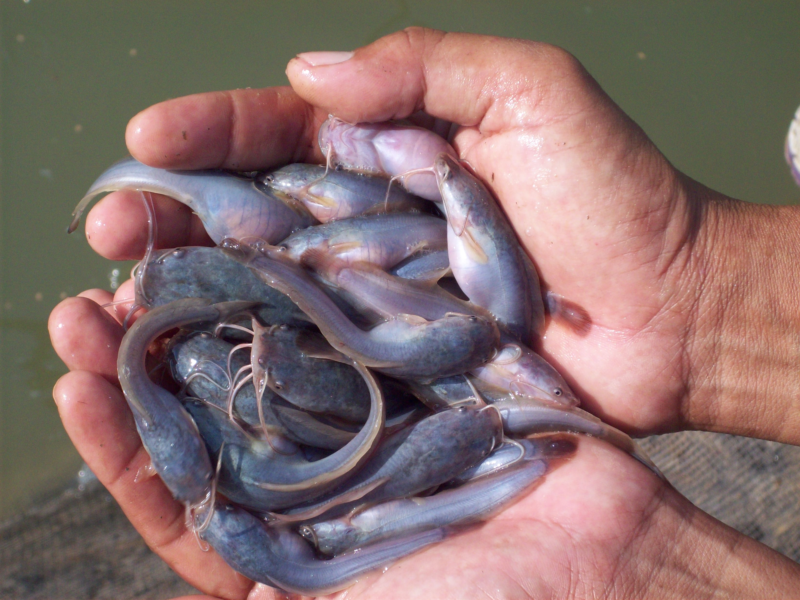

Kesuksesan bisnis ikan lele sangat bergantung pada kualitas bibit yang dipilih, semakin baik bibit maka semakin kecil resiko kerugian yang akan ditanggung.
Ciri bibit yang baik:
Bibit harus berasal dari hasil budidaya benih ikan lele. Pasalnya, bibit tersebut biasanya jauh lebih terjaga kualitasnya karena mengalami proses pemeliharaan intensif selama budidaya.
Tatuh bibit lele dalam wadah, jika anda sulit menangkap bibit ikan lele dengan tangan karena gerakannya gesit, berarti bibit tersebut sangat bagus.
Upayakan memilih bibit ikan lele yang badannya mulus dan sewarna. Warna bibit ikan lele yang baik yakni berwarna cokelat tua atau hitam kemerahan. Morfologi tubuhnya seimbang, dari kepala dan badan. Kulitnya pun cerah dan mengkilap.
Anda harus memilih yang seragam. Artinya, seragam ukuran bibitnya. Mengapa demikian? Karena jika Anda memilih bibit ikan lele yang tidak seragam, risiko terjadi kanibal sangat tinggi.
Sebelum membeli bibit ikan lele, tanyakan dulu kepada pembudidaya tentang riwayat kesehatan bibit. Tanyakan, apakah bibit ikan lele pernah sakit. Tujuannya, supaya jika bibit ikan lele ini mengalami sakit yang sama, Anda akan mudah menanganinya.
Pilihlah bibit ikan lele yang asalnya bukan dari perkawinan inbreeding atau tingkat kekerabatan yang tinggi. Semakin jauh tingkat kekerabatannya, maka akan semakin bagus kualitas bibitnya.
Kriteria terakhir yakni, harus punya kriteria CPIB. Apa itu CPIB ? CPIB adalah Cara Pembenihan Ikan yang Baik. Jika memang kualitas bibit yang Anda beli tersebut baik, pembudidaya pasti mengantongi sertifikat CPIB.
Untuk pembudidaya pemula, kami sarankan untuk mngambil bibit berukuran besar (7-12CM) walaupun bibit tersebut terbilang lebih mahal. Namun, bibit tersebut memiliki ketahanan tubuh yang lebih kuat dan sudah bisa di beri pakan pelet lele.